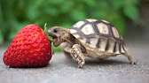
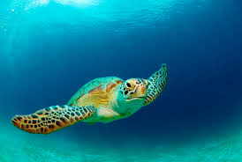

Select an animal!
Select an animal to see its details
Please choose an animal!
Domestic dogs have been selectively bred for millennia for various behaviors, sensory capabilities, and physical attributes.
Modern dog breeds show more variation in size, appearance, and behavior than any other domestic animal.
Dogs are predators and scavengers, and like many other predatory mammals, the dog has powerful muscles, fused wrist bones, a cardiovascular system that supports both sprinting and endurance, and teeth for catching and tearing.
Dogs are highly variable in height and weight.The smallest known adult dog was a Yorkshire Terrier.

The dog's senses include vision, hearing, sense of smell, sense of taste, touch and sensitivity to the earth's magnetic field.
Being the most abundant carnivore, feral and free-ranging dogs have the greatest potential to compete with wolves.
Dogs will healthily digest a variety of foods, including vegetables and grains, and can consume a large proportion of these in their diet.
The term "domestic dog" is generally used for both domesticated and feral varieties.
The domestic cat (Latin: Felis catus) is a small, typically furry, carnivorous mammal.
They are often called house cats when kept as indoor pets or simply cats when there is no need to distinguish them from other felids and felines.
Cats are often valued by humans for companionship and for their ability to hunt vermin.
There are more than 70 cat breeds, though different associations proclaim different numbers according to their standards.
Cats are similar in anatomy to the other felids, with a strong flexible body, quick reflexes, sharp retractable claws, and teeth adapted to killing small prey.
Cat senses fit a crepuscular and predatory ecological niche.
Cats can hear sounds too faint or too high in frequency for human ears, such as those made by mice and other small animals.
They can see in near darkness. Like most other mammals, cats have poorer color vision and a better sense of smell than humans.
Turtles spend most of their lives in water.
They are adapted for aquatic life, with webbed feet or flippers and a streamlined body.
Sea turtles rarely leave the ocean, except to lay eggs in the sand.

Freshwater turtles live in ponds and lakes, and they climb out of the water onto logs or rocks to bask in the warm sun.
Tortoises are land animals. Their feet are round and stumpy, adapted for walking on land.

They also dig burrows with their strong forelimbs, and slip underground when the sun gets too hot.
Terrapins live on land and in water, usually in swamps, ponds, lakes and rivers.
Turtles are very adaptive and can be found on every continent, except Antarctica. Most turtle species are found in southeastern North America and South Asia.